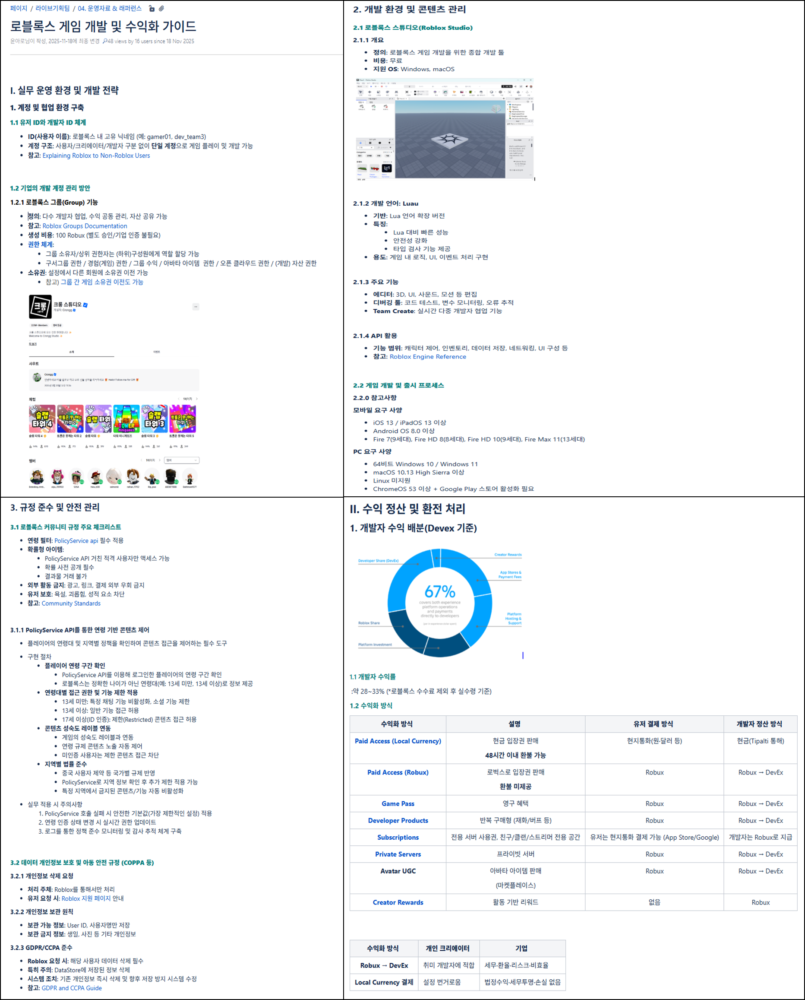
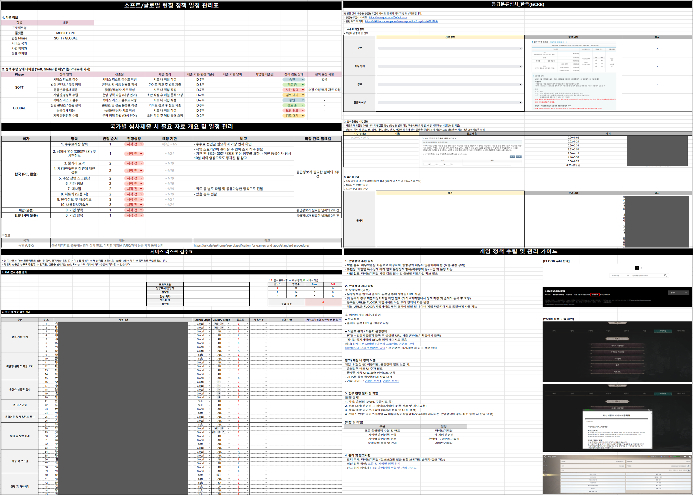
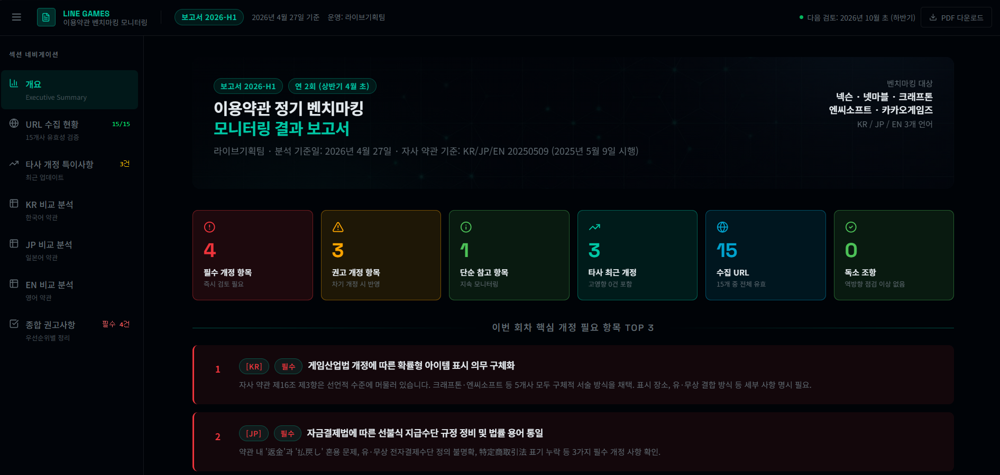
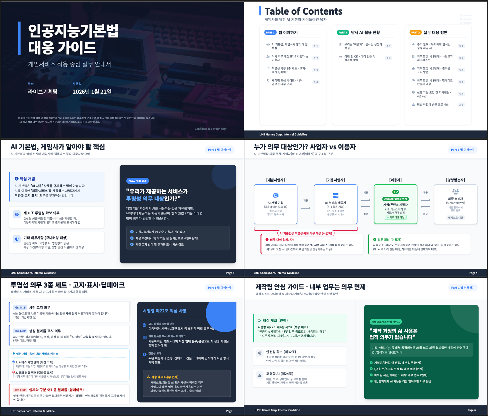
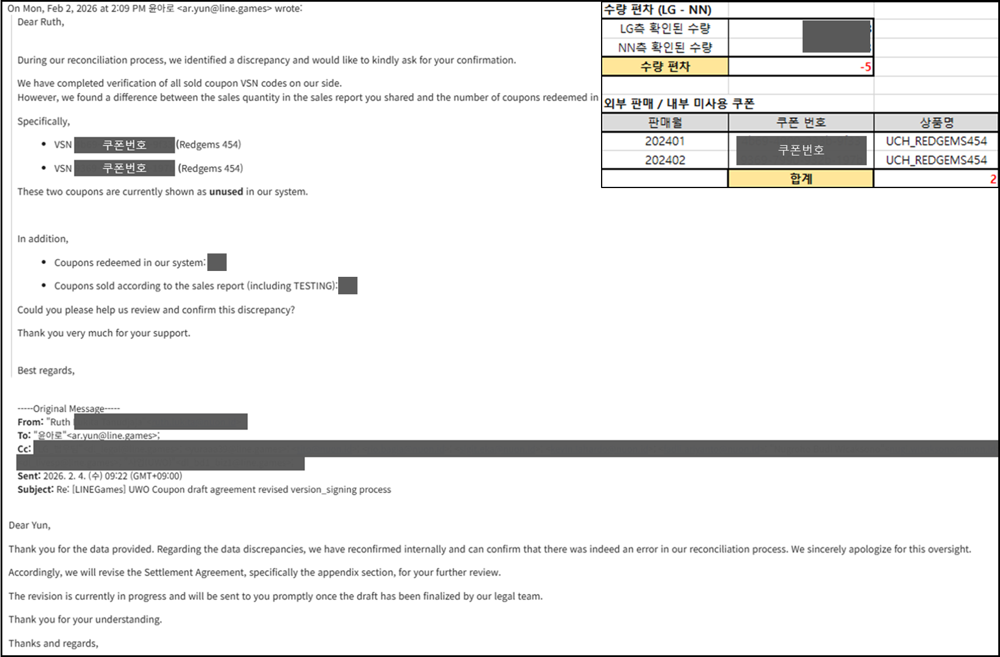
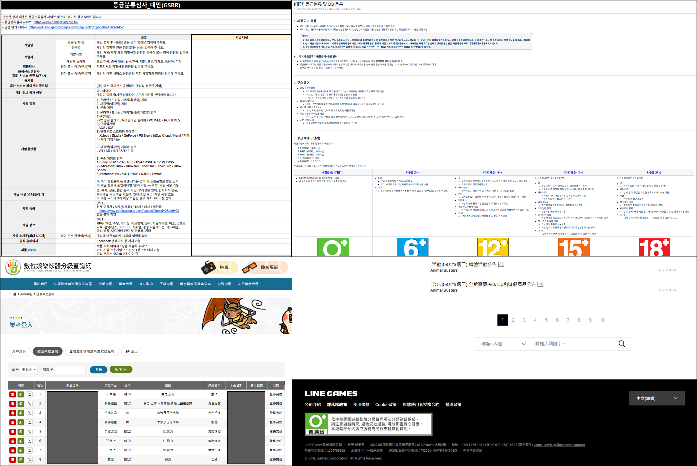

Strategic Planner & Operations Specialist
전략과 실행 사이를
구조화합니다
시장·사업·운영 이슈를 구조적으로 분석하고, 실행 가능한 의사결정 체계와 운영 구조로 연결합니다.
경험과 개별 판단에 의존하던 업무를 데이터·프로세스·지표 기반 체계로 전환하는 데 강점을 가지고 있습니다.

Strategic Planner & Operations Specialist
시장·사업·운영 이슈를 구조적으로 분석하고, 실행 가능한 의사결정 체계와 운영 구조로 연결합니다.
경험과 개별 판단에 의존하던 업무를 데이터·프로세스·지표 기반 체계로 전환하는 데 강점을 가지고 있습니다.
About
🎓 Education
2017.03 – 2021.08
홍익대학교 (학사)
경영학 (주전공) · 법학 (복수전공)
2022.03 – 2024.02
서강대학교 기술경영전문대학원 (석사)
기술경영학 (AI 트랙)
📜 자격 & 어학
SQL 개발자 (SQLD)
컴퓨터활용능력 2급
TOEIC 885
비즈니스 영어 가능
🧭 Career
2023.11 – 2024.05
패션플랫폼
RENOMA 상품기획팀 · 인턴
2024.09 – 현재
라인게임즈
라이브기획팀 (前 서비스전략팀) 사원
Core Skills
전략과 운영을 연결하는 다양한 역량을 보유하고 있습니다.
Projects
카드를 클릭하면 배경·실행·성과·산출물 등 상세 내용을 확인할 수 있습니다.

규제/플랫폼/시장/기술 20개 이상 이슈 체계화, 필터링·검색 포함 인터랙티브 대시보드

외부 시장 데이터 기반 글로벌 기업 수익화·UA 전략 분석으로 시장 기반 판단 체계 마련

수수료·정산·환불 구조 비용 분석으로 기능 중심 → 비용·리스크 기반 판단 체계로 전환

담당자 부재 상황에서 플랫폼 구조 직접 분석, 글로벌 파트너 소통 후 사내 가이드 제작·배포

원본·외부·AI 생성 3방식 다국어 품질 비교로 정성 판단 → 비교 체계 기반 전환

산발적 프로젝트를 본부 단위로 통합하고 수동 현황 공유를 자동 리포팅 체계로 전환

공통+실별 이중 평가 프레임 설계 및 파일럿 운영으로 일정관리 중심 → 성과 중심 전환

수작업 뉴스 수집을 자동화하여 일일 모니터링 공수 약 80% 절감 (30분 → 5분)

분산 운영 이벤트 일정을 자동 취합하고 간트차트·리포트 메일 자동 발송 체계 구축

시장 내 주요 제품의 이용량·가격·평가·프로모션 데이터를 일별 자동 수집하고 장기 흥행 패턴 분석 체계 구축

정책 문서 분산 관리 문제를 NotebookLM 기반 질의응답 구조로 해결. 기획·설계·구축·운영 전 과정 단독 수행

일본·대만·인도네시아·한국 규제 분석 및 표준 운영정책 프레임 구축으로 검토 리드타임 단축

국내 주요 5개사 이용약관 정기 벤치마킹(3개 언어권, 연 2회), 법적 리스크 사전 식별 체계

AI 기본법 시행에 따른 활용 유형 분류 체계 설계 및 투명성 가이드 작성, 내부 기준 최초 수립

Amendment·Termination·Settlement Agreement 체결, JASRAC 등 저작권 기관 소급 정산 대응

디지털 플랫폼(App Store·Google Play) 정책 대응 및 국가별 규제기관 등록·심사 프로세스 체계화


📌 배경
본부 내 각 실/팀 프로젝트가 산발적으로 운영되며 진행 현황 파악 및 일정 관리 기준이 부재한 상황이었습니다.
🔧 실행
본부 프로젝트 유형을 리스크·효율·확장·성과 4분류로 체계화하고, 본부 전체 프로젝트 진행 일정 관리 구조를 설계·운영했습니다. 프로젝트 현황 리포팅 자동화 체계를 구축하여 수작업 중심 공유 프로세스를 개선했습니다.
📊 성과
4개 실·16개 팀·59개 프로젝트·13개 핵심 프로젝트를 통합 관리하는 운영 체계를 구축하여 조직 단위 프로젝트 가시성과 관리 효율을 향상시켰습니다. 수동 현황 공유 방식에서 자동 리포팅 체계로 전환하여 담당자 리소스를 절감했습니다.
✅ 주요 산출물
일정관리 시트 및 주요 프로젝트 진행현황 리포트 (자동 발송)

📌 배경
프로젝트 성과 정의·평가 기준이 부재하여 기여도 측정 및 우선순위 판단이 어려운 상황이었습니다.
🔧 실행
성과 지표·산출물 기준·기여도 구조를 설계하고, 조직 공통 KPI와 조직별 특화 KPI를 결합한 다층 평가 구조를 설계하여 운영했습니다.
📊 성과
4개 실·16개 팀·59개 프로젝트 운영 기준에 맞춰 공통 KPI 및 조직별 KPI 기반 평가 체계를 설계·운영했습니다.
✅ 주요 산출물
성과 평가표

📌 배경
결제 솔루션 도입 검토 시 기능·일정 중심으로 논의가 진행되어 수수료·정산·환불 구조 등 운영 리스크가 충분히 검토되지 않은 상태에서 의사결정이 이루어지는 문제가 있었습니다.
🔧 실행
결제 솔루션별 수수료·정산·환불 구조·운영 부담을 비교하고 비용 분석표를 작성했습니다. 도입 방식별(직접/중간/플랫폼) 운영 난이도와 리스크를 분석하고, 결제수단별 매출 및 수수료 구조를 통합 분석했습니다.
📊 성과
기능 중심 검토 구조를 운영·비용·리스크를 포함한 통합 의사결정 체계로 전환했습니다.
✅ 주요 산출물
결제수단별 매출 및 수수료 구조 분석표


📌 배경
신규 플랫폼 진출 검토 과정에서 사내 담당자가 없고 플랫폼 구조에 대한 이해도가 낮아 의사결정 및 실무 운영의 기반이 부재한 상황이었습니다.
🔧 실행
플랫폼 구조(계정·그룹·권한 체계), 개발 환경, 수익화 구조, 규정 준수 요건을 직접 분석·정리했습니다. 글로벌 파트너 본사 미팅 및 한국지사와 지속적 소통으로 정책·운영 요건을 확인하고, 정책·권한·운영·수익화 구조를 포함한 실무 운영 기준을 정리하여 내부 가이드로 체계화했습니다.
📊 성과
신규 플랫폼에 대한 사내 공통 이해 기반을 마련하고 검토·의사결정 속도를 향상시켰습니다.
✅ 주요 산출물
신규 플랫폼 가이드 (일부)

📌 배경
생성형 AI 이미지 솔루션 도입 가능성 검토가 필요했으나 품질·운영 적합성·비용 구조에 대한 내부 판단 기준이 부재한 상황이었습니다.
🔧 실행
외부 생성형 AI 이미지 솔루션 PoC를 기획하고 PM을 수행했습니다. 원본·외부 업체·AI 생성 3방식의 다국어 품질을 비교 검증하고, 품질·운영 효율·비용 구조를 기준으로 도입 적합성을 검증했습니다.
📊 성과
도입 여부 판단을 위한 내부 검토 자료 및 구조화된 비교 기준을 마련했습니다. 정성적 판단에 의존하던 솔루션 평가를 비교 체계 기반 판단 구조로 전환했습니다.
✅ 주요 산출물
커뮤니케이션 및 PoC 비교 테스트 (원본·외부 업체·AI 생성 3방식 × 다국어 품질 비교)


📌 배경
정책·뉴스·시장 이슈가 수작업 수집·정리에 의존하여 누락 위험이 높고 담당자 리소스가 과도하게 소요되던 상황이었습니다.
🔧 실행
자동화 구조를 기획하고 크롤링·정리 시스템 구축을 주도했습니다. 주요 매체 뉴스 자동 크롤링 파이프라인을 구축하고, AI 기반 요약·분류 파이프라인을 구축하여 전사 데일리 뉴스 제작 체계를 확립했습니다.
📊 성과
일일 뉴스 모니터링 공수 약 80% 절감 (30분 → 5분). 이슈 누락 리스크 구조적 감소. 단순 정보 수집 업무를 분석·리스크 판단 중심 구조로 전환했습니다.
✅ 주요 산출물
뉴스 자동 크롤링 스크립트 / AI 기반 자동 요약 결과물


📌 배경
운영 이벤트 일정이 분산 관리되어 현황 파악·공유에 수작업 리소스가 집중되고 일정 충돌 관리가 어려운 상황이었습니다.
🔧 실행
운영 이벤트 시트 자동 취합 구조를 설계·구축하고, 간트차트 자동 생성 → 리포트 메일 자동 발송 체계를 구축했습니다.
📊 성과
운영 일정 관리·공유·리포팅 리드타임을 단축했습니다. 프로젝트별 일정 가시성 및 충돌 관리 구조를 확보했습니다.
✅ 주요 산출물
운영 데이터 자동 취합 및 간트차트 생성·자동 리포팅 시스템


📌 배경
시장·경쟁 지표 수집이 수작업 조사에 의존하여 정기적인 모니터링이 어렵고 분석 리소스가 부족한 상황이었습니다.
🔧 실행
시장 내 주요 제품의 이용량·가격·평가·프로모션 데이터를 일별 자동 수집하는 파이프라인을 개발했습니다. 수집 데이터를 기반으로 장기 성과 패턴 분석 및 추세 모니터링 구조를 구축하여, 수작업 없이 상시 지표 기반 시장 모니터링이 가능한 체계를 마련했습니다.
📊 성과
수작업 조사 없이 상시 지표 기반 시장 분석이 가능한 구조를 마련했습니다.
✅ 주요 산출물
Steam 차트 트래커 대시보드 ↗


📌 배경
글로벌 사업 환경에서 규제·플랫폼 정책·BM 변화 등 외부 변수가 증가함에 따라 통합 분석 및 의사결정에 활용 가능한 체계가 필요했습니다.
🔧 실행
규제·플랫폼·시장·기술 영역의 외부 이슈를 통합 분석할 수 있는 분류 체계를 설계하고, Risk(HIGH/MEDIUM)/Opportunity 기준 의사결정 매트릭스를 구축했습니다. 단기/중기/상시 기준 시급성 레이어와 20개 이상 핵심 이슈를 체계화하고 필터링·검색 기능을 포함한 탐색형 인사이트 시스템을 구축했습니다.
📊 성과
분산된 외부 이슈 정보를 의사결정에 활용 가능한 구조화된 인사이트 체계로 전환했습니다.


📌 배경
글로벌 경쟁사의 사업 구조·수익화 전략에 대한 체계적 분석이 부재하여 전략 수립 시 시장 기반 판단이 어려운 상황이었습니다.
🔧 실행
외부 시장 데이터 기반으로 글로벌 기업의 사업 포트폴리오, 수익 구조, 고객 확보 전략 및 성장 구조를 분석했습니다. 시장 경쟁 구조 변화 및 비용 상승 요인을 포함한 사업 환경 분석을 수행하고, 수익 구조 변화·플랫폼 다변화·신흥 시장 성장 등 시장 구조 변화에 따른 성장 기회 및 리스크 요인을 구조화했습니다.
📊 성과
주요 글로벌 기업의 성공 전략 구조화로 전략 수립 시 시장 기반 판단 가능 체계를 마련했습니다.
✅ 주요 산출물
글로벌 기업 성공 전략 분석 보고서 (일부)


📌 배경
정책 자료가 분산 관리되어 검색 비효율 및 담당자별 답변 편차가 발생했습니다. AI 기반 내부 지식 관리 도구 도입 필요성이 대두되었으나 도입 기준·운영 거버넌스·실사용 가능성에 대한 내부 판단 체계가 부재한 상황이었습니다.
🔧 실행
기획–설계–구축–운영 기준 수립 전 과정을 단독 수행했습니다. 사내 정책 자료·외부 규제 문서를 통합 정리하고 주제·국가·이슈 기준 분류 체계를 설계·구조화했습니다. Generative AI 기반 정책·규제 문서 질의응답 체계를 설계하고, 근거 기반 응답 원칙·답변 범위 통제·할루시네이션 방지 가이드를 정의했습니다.
📊 성과
검색 중심에서 질의응답 중심으로 전환하여 정책 검토 및 참고 시간을 단축했습니다. 담당자별 답변 편차가 감소하고 공통 기준 기반 응답 체계를 구축했습니다.
✅ 주요 산출물
정책 문서 분류·관리 체계 / 정책 어시스턴트 (출처 근거 응답 및 관련 문서 연동)


📌 배경
다국가 서비스 환경에서 국가별 규제·등급·정책을 개별 대응하는 구조로 인해 출시/이벤트/BM 변경 시마다 법무 의존도가 높고 리스크 대응이 지연되는 문제가 있었습니다.
🔧 실행
일본·대만·인도네시아·한국 규제를 전문 분석하여 내부 문서화했습니다. 국가별 규제 변화를 약관 조항 단위로 비교 분석하고, 국가별 소비자보호·표시 규제·청소년 보호·디지털 서비스 정책을 비교 분석하며, 멀티 타이틀 운영정책 비교 분석을 통한 표준 운영정책 프레임을 구축했습니다.
📊 성과
사전 체크리스트 기반 내부 1차 판단 가능 체계로 전환하여 검토 리드타임을 단축했습니다. 신규 타이틀·정책 개정 시 즉시 적용 가능한 내부 기준을 정립했습니다.
✅ 주요 산출물
국가별 규제 분석 문서 / 표준 운영정책 프레임


📌 배경
경쟁사 약관 변화를 체계적으로 모니터링하는 구조가 없어 자사 약관의 법적 리스크 및 시장 흐름을 사전에 파악하기 어려운 상황이었습니다.
🔧 실행
국내 주요 경쟁사 5개사 이용약관 정기 벤치마킹 모니터링 체계를 구축·운영했습니다 (3개 언어권, 연 2회). 국가별 규제 변화(소비자보호법, 전자결제법, EU DSA 등)를 약관 조항 단위로 비교 분석하고, 필수·권고·참고 우선순위 기반 개정 권고 체계를 설계했습니다.
📊 성과
수작업 기반 약관 비교·분석 업무를 모니터링 대시보드 기반으로 전환하여 검토 공수 및 변경사항 추적 시간을 단축했습니다.
✅ 주요 산출물
이용약관 벤치마킹 모니터링 보고서 (2026-H1) ↗


📌 배경
AI 관련 규제 도입에 따라 조직 내 AI 활용 가능 범위 및 리스크 판단 기준이 부재한 상황이었습니다.
🔧 실행
AI 기본법 및 관련 규제 내용을 분석하고, 조직 내 AI 활용 유형별 적용 대상·주의사항·제한 가능 영역을 분류했습니다. 또한 실무 활용 가능 범위와 검토 필요 항목을 정리한 내부 가이드를 제작·배포하고, 유관부서 질의 대응 체계를 운영했습니다.
📊 성과
AI 활용 관련 공통 판단 기준을 마련하여 부서별 대응 편차를 줄이고 사전 검토 체계를 구축했습니다.
✅ 주요 산출물
AI 기본법 시행 대응 가이드 (일부)

📌 배경
글로벌 서비스 운영 과정에서 계약 변경·서비스 종료·정산 이슈 등 복합적인 외부 대응 업무에서 법적·운영 리스크 관리 요구가 증가했습니다.
🔧 실행
글로벌 파트너사와 계약 변경·종료·정산 이슈 전반에 대한 협의 및 운영 조율을 수행했습니다. (Amendment, Termination Agreement, Settlement Agreement 체결 및 정산 금액 검증). JASRAC 등 해외 저작권 관리기관과의 사용료 정산 및 소급 정산에 대응하고, 내부 법무·재무·플랫폼 조직과 협업하여 컴플라이언스 이슈에 대응했습니다.
📊 성과
계약 변경·종료·정산·저작권 대응 등 복합 외부 이슈를 통합 관리하며, 다부서 협업 기반 대응 프로세스를 체계화했습니다./p>
✅ 주요 산출물
파트너사 정산 데이터 불일치 분석 및 계약 수정 합의 도출 사례


📌 배경
다국가 서비스 운영 특성상 각국 규제기관 및 디지털 플랫폼의 정책·고지 요건 대응이 복잡해지면서 체계적 대응 구조가 필요했습니다.
🔧 실행
App Store / Google Play 정책 및 고지 요건에 대응했습니다. 게임물관리위원회, GSRR, IGRS 등 국가별 규제기관 대응 및 등록 프로세스를 관리하고, 국가별 규제·플랫폼 정책 기반 대응 전략을 수립하며 내부 협업을 조율했습니다.
📊 성과
다국가 규제기관·플랫폼 대응 기준을 표준화하여 등록·검토·내부 협업 리드타임을 단축하고, 정책·재무·운영 이슈를 통합 관리하는 대외 대응 체계를 구축했습니다.
✅ 주요 산출물
국가별 등급 심사 대응 프로세스 및 운영 체계 구축